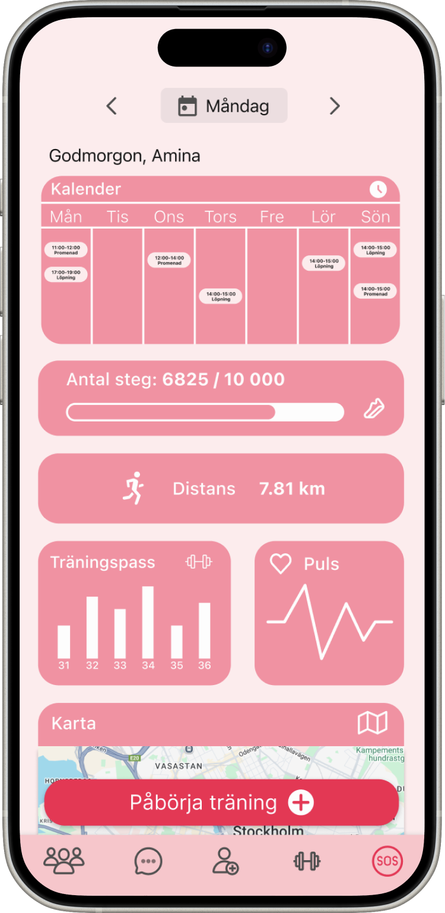
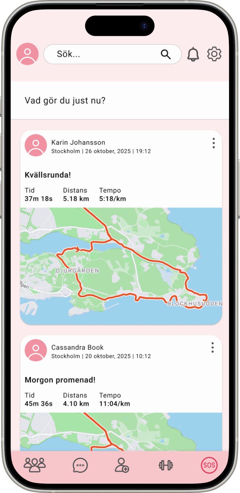

Fitness app for safety and community
Many women avoid exercising alone, especially during evening hours, due to safety concerns and lack of motivation. This leads to decreased physical activity despite the desire to exercise regularly.
Through interviews with 7 women between 20-45 years old, we identified three main challenges:
As part of a team of four, I was actively involved throughout the entire design process:
We conducted 7 qualitative interviews with women in different life situations: parents with young children, students, working professionals, and dog owners.
Women avoid evening workouts alone due to fear
Companionship makes exercise more enjoyable and sustainable
Users want to feel safe about who they meet
"I would definitely use this app! Knowing that someone is BankID-verified makes me feel safe meeting new people." - Test participant, 29 years old

An app that combines safety, community, and motivation to help women find workout companions in a secure way.
We created a clickable Figma prototype with a focus on safety and user-friendliness.

Map view to start and track workout

Dashboard with calendar and statistics

Community feed to share activities

We tested the prototype with 5 women (22-45 years old) who completed realistic tasks: register profile, find workout buddy, start workout, chat.

Participants said the app would increase their workout motivation
Appreciated safety features (BankID, SOS)
User interviews conducted
User tests with concrete insights
For an app like this, I realized that users' sense of security is more important than all other features. Without BankID and SOS button, the app wouldn't work.
A button with the wrong color can cause users to miss a core feature. I learned to test every detail.
We thought icons were self-explanatory, but users interpreted them completely differently. It taught me to never assume - always test with real users.
My previous experience from customer service at Klarna and LG helped me truly listen to users and understand their feelings - not just what they said, but why they felt the way they did.
If the project continued, I would:
Feel free to reach out if you want to discuss the project or collaborate!
Contact me